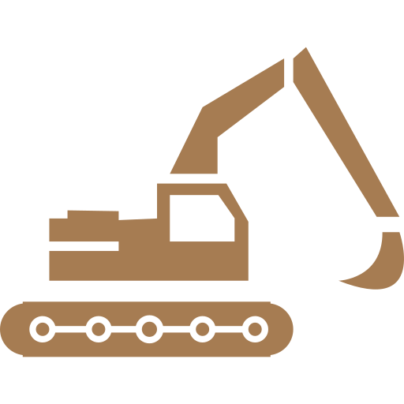

Практическое задание 1
Выполнил "Сергей" "Капитонов" "Группа 809"
Добыча полезный ископаемых в космосе
Это выгодно?

- Ресурсов в поясе астероидов — $700 квинтиллионов или $100 млрд на каждого жителя Земли;
- Среднего платинового (богатого платиной) астероида — около $3 трлн;
- Небесного тела с замороженной водой – около $5 триллионов;
- Железной руды на астероиде (16) Психея, космический аппарат для изучения которого отправится в 2022 году, — $10 трлн;
- Полезных ископаемых астероида UW-158, содержащего около 100 млн тонн платины, – до $5,4 трлн.
Природный материал можно доставлять для переработки на Землю, либо перерабатывать на месте.
Если удастся реализовать идею по выводу объектов на околоземную орбиту с оптимальными условиями гравитации,
реальностью станет организация постоянной добычи.